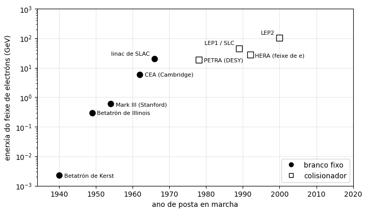
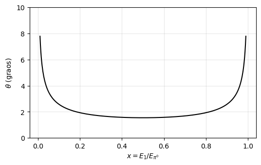

Partículas — boletín I#
Cinemática relativista: unidades naturais, cambio de sistema de referencia e desintegracións a dous corpos#
José A. Hernando
Departamento de Física de Partículas. Universidade de Santiago de Compostela
Curso 2026/27
# Configuración e importacións
%matplotlib inline
import numpy as np
import matplotlib.pyplot as plt
# Constantes (MeV, fm, s) e masas (MeV)
hbarc = 197.3 # MeV fm
c = 3.0e8 # m/s
m_e, m_mu, m_pi, m_pi0 = 0.511, 105.66, 139.57, 134.98
m_K, m_p, m_L = 493.68, 938.27, 1115.68
def pstar(ma, mb, mc):
# momento das fillas en a -> b + c, no sistema de repouso de a (exercicio 4)
return np.sqrt((ma**2 - (mb + mc)**2) * (ma**2 - (mb - mc)**2)) / (2 * ma)
def Estar(ma, mb, mc):
# enerxía de b en a -> b + c, no sistema de repouso de a (exercicio 4)
return (ma**2 + mb**2 - mc**2) / (2 * ma)
Notación#
Unidades. Unidades naturais, \(\hbar = c = 1\), salvo que se diga o contrario: masas, momentos e enerxías en eV e os seus múltiplos.
Partículas. \(e\), \(\mu\) e \(\tau\) son os leptóns con carga negativa, e \(e^+\), \(\mu^+\) e \(\tau^+\) as súas antipartículas. O signo \(+\) separa todas as partículas, tamén as do estado inicial.
Sistemas de referencia. LAB é o do laboratorio, no que está o detector. CM é o do centro de masas, no que o momento total é cero; nunha desintegración, o de repouso da nai. As magnitudes no CM levan asterisco (\(p^*\), \(E^*\), \(\theta^*\)). Salvo que se diga o contrario, os datos están no LAB.
Constantes. \(\hbar c = 197.3\) MeV fm; \(hc = 1239.7\) MeV fm; \(\hbar = 6.582\times10^{-22}\) MeV s; \(c = 3.0\times10^{8}\) m/s; 1 b \(= 10^{-24}\) \(\mathrm{cm}^2 = 100\) \(\mathrm{fm}^2\).
Masas. \(m_e = 0.511\) MeV, \(m_\mu = 105.66\) MeV, \(m_{\pi^\pm} = 139.57\) MeV, \(m_{\pi^0} = 134.98\) MeV, \(m_{K^\pm} = 493.68\) MeV, \(m_p = 938.27\) MeV, \(m_\Lambda = 1115.68\) MeV.
Tamaños. átomo, \(\sim10^{5}\) fm; núcleo, \(\sim5\) fm; protón, \(0.84\) fm; electrón e quark, \(< 10^{-3}\) fm (cota experimental).
[>] Exercicio 1 — Unidades naturais
Expresa en unidades naturais, é dicir, como unha potencia da unidade de enerxía: (a) o femtosegundo e o fermi, en potencias de GeV; (b) o metro e o segundo, en potencias de MeV; (c) o barn, en función de GeV.
fm = 1 / hbarc # MeV^-1
print('1 fm = {:.2f} GeV^-1'.format(1e3 * fm))
print('1 fs = {:.2e} GeV^-1'.format(c * 1e-15 * 1e15 * 1e3 * fm))
print('1 m = {:.2e} MeV^-1, 1 s = {:.2e} MeV^-1'.format(1e15 * fm, c * 1e15 * fm))
print('1 b = {:.2e} GeV^-2, 1 GeV^-2 = {:.3f} mb'.format(100 * (1e3 * fm)**2, 1e3 / (100 * (1e3 * fm)**2)))
1 fm = 5.07 GeV^-1
1 fs = 1.52e+09 GeV^-1
1 m = 5.07e+12 MeV^-1, 1 s = 1.52e+21 MeV^-1
1 b = 2.57e+03 GeV^-2, 1 GeV^-2 = 0.389 mb
Solución
As dúas constantes de conversión son \(\hbar c = 197.3\) MeV fm \(= 1\) e \(c = 3.0\times10^{8}\) m/s \(= 1\).
\(1\) fm \(= \dfrac{1}{197.3}\) \(\mathrm{MeV}^{-1} = 5.07\) \(\mathrm{GeV}^{-1}\). Un fs equivale á distancia que percorre a luz nese tempo, \(3.0\times10^{-7}\) m \(= 3.0\times10^{8}\) fm, logo \(1\) fs \(= 3.0\times10^{8}\times 5.07\) \(\mathrm{GeV}^{-1} = 1.52\times10^{9}\) \(\mathrm{GeV}^{-1}\) (ou ben, con \(\hbar = 6.58\times10^{-25}\) GeV s, \(1\) fs \(= 10^{-15}/\hbar\)).
\(1\) m \(= 10^{15}\) fm \(= 5.07\times10^{12}\) \(\mathrm{MeV}^{-1}\); \(1\) s \(= 3.0\times10^{8}\) m \(= 1.52\times10^{21}\) \(\mathrm{MeV}^{-1}\).
\(1\) b \(= 100\) \(\mathrm{fm}^2 = 100\times(5.07)^2\) \(\mathrm{GeV}^{-2} = 2.57\times10^{3}\) \(\mathrm{GeV}^{-2}\), ou ben \(1\) \(\mathrm{GeV}^{-2} = 0.389\) mb.
As lonxitudes e os tempos van como \(E^{-1}\) e as áreas como \(E^{-2}\): en unidades naturais só queda unha unidade independente, e escóllese a enerxía.
[>] Exercicio 2 — Un Boeing e un mosquito
Compara a enerxía cinética dun Boeing 747, cuxa masa é de 400 toneladas, á súa velocidade de cruceiro de 850 km/h, coa enerxía liberada na aniquilación dun mosquito cun antimosquito, sendo a masa do mosquito de 1 mg. (O avión non é relativista.)
T_boeing = 0.5 * 4e5 * (850 / 3.6)**2 # J
E_mosq = 2 * 1e-6 * c**2 # J
print('T = {:.1e} J, E = {:.1e} J, E/T = {:.0f}'.format(T_boeing, E_mosq, E_mosq / T_boeing))
T = 1.1e+10 J, E = 1.8e+11 J, E/T = 16
Solución
\(T_{\rm Boeing} = \tfrac12 M v^2 = \tfrac12 (4\times10^{5}\ \mathrm{kg})(236\ \mathrm{m/s})^2 = 1.1\times10^{10}\) J. Na aniquilación toda a masa, 2 mg, convértese en enerxía: \(E = 2 m c^2 = 2\times10^{-6}\ \mathrm{kg}\,(3\times10^{8})^2 = 1.8\times10^{11}\) J, unhas 16 veces a enerxía cinética do avión. A masa é unha forma de enerxía enormemente concentrada: o factor \(c^2\) compensa de sobra os once ordes de magnitude que hai entre un mosquito e un avión.
[>] Exercicio 3 — Enerxía e velocidade
Unha partícula de masa 3 GeV ten, no laboratorio, un momento de 4 GeV/c na dirección \(z\). Cales son a súa enerxía e a súa velocidade? Dá tamén os seus factores \(\gamma\) e \(\gamma\beta\).
Solución
\(E = \sqrt{p^2 + m^2} = \sqrt{16+9} = 5\) GeV; \(\beta = p/E = 0.8\) (na dirección \(z\)); \(\gamma = E/m = 5/3 = 1.67\); \(\gamma\beta = p/m = 4/3\). O triángulo \((3,4,5)\) é o mesmo de sempre: \(m\), \(p\) e \(E\) son os dous catetos e a hipotenusa de \(E^2 = p^2 + m^2\).
[>] Exercicio 4 — Momento no CM dunha desintegración a dous corpos
Sexa unha partícula \(a\) de masa \(m_a\) que se desintegra noutras dúas, \(a \to b + c\), de masas \(m_b\) e \(m_c\). Dá as expresións da enerxía e do momento de \(b\) e de \(c\) no centro de masas (CM), é dicir, no sistema no que \(a\) está en repouso, e demostra que o momento \(p^*\) das dúas partículas fillas nese sistema é
# Comprobación numérica con K -> mu + nu (m_nu = 0): E*_mu^2 - p*^2 = m_mu^2
ps, Es = pstar(m_K, m_mu, 0), Estar(m_K, m_mu, 0)
print('p* = {:.1f} MeV, E*_mu = {:.1f} MeV, sqrt(E*^2 - p*^2) = {:.2f} MeV'.format(ps, Es, np.sqrt(Es**2 - ps**2)))
p* = 235.5 MeV, E*_mu = 258.1 MeV, sqrt(E*^2 - p*^2) = 105.66 MeV
Solución
No CM, \(p_a = (m_a, \vec 0)\) e \(\vec p_b = -\vec p_c\), de modo que as dúas fillas teñen o mesmo momento en módulo, \(p^*\). De \(p_c = p_a - p_b\) e elevando ao cadrado, \(m_c^2 = m_a^2 + m_b^2 - 2m_aE^*_b\), logo
\(p^{*2} = E^{*2}_b - m_b^2 = \dfrac{(m_a^2 + m_b^2 - m_c^2)^2 - 4m_a^2m_b^2}{4m_a^2}\); o numerador é unha diferenza de cadrados, \((m_a^2 + m_b^2 - m_c^2 - 2m_am_b)(m_a^2 + m_b^2 - m_c^2 + 2m_am_b) = [(m_a-m_b)^2 - m_c^2][(m_a+m_b)^2 - m_c^2]\), que reordenado dá a expresión pedida. Caso particular útil, \(m_c = 0\): \(p^* = (m_a^2 - m_b^2)/(2m_a)\).
Obsérvese que \(p^*\) só depende das tres masas: nunha desintegración a dous corpos a cinemática está completamente fixada, e o único libre é a dirección de emisión.
[>] Exercicio 5 — Desintegración $K^- \to \mu + \bar\nu_\mu$
Considera a desintegración \(K^- \to \mu + \bar\nu_\mu\).
Trátase dunha interacción forte ou feble?
Calcula a enerxía e o momento do \(\mu\) e do \(\bar\nu_\mu\) no CM (o sistema no que o \(K^-\) está en repouso).
Se no laboratorio o \(K^-\) ten un momento de 5 GeV/c, cal é o momento máximo que pode ter o \(\mu\) no laboratorio?
ps, Es = pstar(m_K, m_mu, 0), Estar(m_K, m_mu, 0)
E_K = np.sqrt(5000**2 + m_K**2)
g, b = E_K / m_K, 5000 / E_K
print('p* = {:.1f} MeV, E*_mu = {:.1f} MeV, E*_nu = {:.1f} MeV'.format(ps, Es, ps))
print('gamma = {:.2f}, beta = {:.4f}'.format(g, b))
print('p_max = {:.2f} GeV, p_min = {:.2f} GeV'.format(g * (ps + b * Es) / 1e3, g * (b * Es - ps) / 1e3))
p* = 235.5 MeV, E*_mu = 258.1 MeV, E*_nu = 235.5 MeV
gamma = 10.18, beta = 0.9952
p_max = 5.01 GeV, p_min = 0.22 GeV
Solución
É feble: o \(K^-\) é un mesón (\(s\bar u\)) e o par aniquílase nun \(W^-\), que cambia o sabor e produce un neutrino. (De paso, comprobación de que está permitida: conserva a carga, \(-1\to-1\); o número bariónico, \(0\to0\); o leptónico de sabor, \(L_\mu: 0 \to +1-1 = 0\); e \(m_K > m_\mu\).)
Coas fórmulas do exercicio 4 e \(m_\nu = 0\): \(p^* = \dfrac{m_K^2 - m_\mu^2}{2m_K} = 235.5\) MeV/c, \(E^*_\mu = \dfrac{m_K^2 + m_\mu^2}{2m_K} = 258.1\) MeV, \(E^*_\nu = p^* = 235.5\) MeV.
O boost do CM ao laboratorio ten \(\gamma = E_K/m_K = 10.18\) e \(\beta = 0.9952\). O momento lonxitudinal do \(\mu\) é \(p_\parallel = \gamma(p^*\cos\theta^* + \beta E^*_\mu)\), máximo cando o \(\mu\) se emite cara adiante no CM (\(\theta^* = 0\)): \(p_{\max} = \gamma(p^* + \beta E^*_\mu) = 5.01\) GeV/c, algo maior ca o momento do propio \(K^-\). O mínimo, con \(\theta^* = 180^\circ\), é \(p_{\min} = \gamma(\beta E^*_\mu - p^*) = 0.22\) GeV/c: no laboratorio todos os muóns teñen momentos entre eses dous valores.
[>] Exercicio 6 — Desintegración $\Lambda \to p + \pi^-$ en voo
Unha partícula \(\Lambda\) desintégrase vía \(\Lambda \to p + \pi^-\). No laboratorio a \(\Lambda\) ten un momento \(p_\Lambda = 2\) GeV/c, e no CM o protón sae formando \(\theta^* = 30^\circ\) coa dirección de voo da \(\Lambda\). Calcula:
a enerxía do \(p\) e do \(\pi^-\) no CM;
os factores \(\gamma\) e \(\beta\) da transformación entre o laboratorio e o CM;
o ángulo e o momento do \(p\) e do \(\pi^-\) no laboratorio.
ps = pstar(m_L, m_p, m_pi)
Ep, Epi = Estar(m_L, m_p, m_pi), Estar(m_L, m_pi, m_p)
E_L = np.sqrt(2000**2 + m_L**2)
g, b = E_L / m_L, 2000 / E_L
print('p* = {:.1f} MeV, E*_p = {:.1f} MeV, E*_pi = {:.1f} MeV; gamma = {:.3f}, beta = {:.3f}'.format(
ps, Ep, Epi, g, b))
for nombre, E, th in (('p ', Ep, 30), ('pi', Epi, 150)):
pT = ps * np.sin(np.radians(th))
pL = g * (ps * np.cos(np.radians(th)) + b * E)
print('{}: pL = {:6.1f} MeV, pT = {:.1f} MeV, p = {:6.1f} MeV, theta = {:.1f} graos'.format(
nombre, pL, pT, np.hypot(pL, pT), np.degrees(np.arctan2(pT, pL))))
p* = 100.6 MeV, E*_p = 943.6 MeV, E*_pi = 172.0 MeV; gamma = 2.053, beta = 0.873
p : pL = 1870.4 MeV, pT = 50.3 MeV, p = 1871.1 MeV, theta = 1.5 graos
pi: pL = 129.6 MeV, pT = 50.3 MeV, p = 139.0 MeV, theta = 21.2 graos
Solución
\(p^* = 100.6\) MeV/c, \(E^*_p = \dfrac{m_\Lambda^2 + m_p^2 - m_\pi^2}{2m_\Lambda} = 943.6\) MeV, \(E^*_\pi = m_\Lambda - E^*_p = 172.0\) MeV.
\(E_\Lambda = \sqrt{2000^2 + 1115.7^2} = 2290\) MeV; \(\gamma = E_\Lambda/m_\Lambda = 2.053\), \(\beta = p_\Lambda/E_\Lambda = 0.873\).
O boost conserva a compoñente transversal, \(p_T = p^*\sin\theta^* = 50.3\) MeV/c, e transforma a lonxitudinal, \(p_\parallel = \gamma(p^*\cos\theta^* + \beta E^*)\). O \(\pi^-\) sae no CM a \(\theta^* = 150^\circ\), ao outro lado do eixe.
Protón: \(p_\parallel = 1870\) MeV/c \(\Rightarrow p = 1871\) MeV/c, \(\theta = 1.5^\circ\).
Pión: \(p_\parallel = 2.053\,(-87.1 + 0.873\times172.0) = 129.6\) MeV/c \(\Rightarrow p = 139.0\) MeV/c, \(\theta = 21.2^\circ\), ao outro lado do eixe.
Comprobación: \(p_{\parallel,p} + p_{\parallel,\pi} = 2000\) MeV/c \(= p_\Lambda\), e as compoñentes transversais cancélanse. Nótese o asimétrico do resultado: a partícula pesada lévase case todo o momento e apenas se desvía, mentres que a lixeira sae a un ángulo unhas catorce veces maior.
Ampliación#
[>] Exercicio 7 — Sesenta anos de aceleradores de electróns
A figura recolle a enerxía do feixe de electróns das principais máquinas —non \(\sqrt s\)—, fronte ao ano en que entraron en funcionamento. Nun colisionador simétrico as dúas cousas están relacionadas por \(\sqrt s = 2E\). Todas as respostas se piden en orde de magnitude.
Traduce a enerxía de cada máquina á distancia que é capaz de resolver, \(d \sim \hbar c/E\), e compáraa cos tamaños da táboa da notación. Que puido ver cada xeración de máquinas: o núcleo, a súa forma, o protón, os quarks?
A que ritmo medrou a enerxía entre 1940 e 1966? E entre 1966 e 2000?
Se o ritmo da primeira época continuase, que enerxía teriamos hoxe? Temos esa enerxía? Que pasou?
# ano, enerxía do feixe (GeV), branco fixo (F) ou colisionador (C), máquina
maquinas = [(1940, 0.0023, 'F', 'Betatrón de Kerst'), (1949, 0.30, 'F', 'Betatrón de Illinois'),
(1954, 0.60, 'F', 'Mark III (Stanford)'), (1962, 6.0, 'F', 'CEA (Cambridge)'),
(1966, 20.0, 'F', 'linac de SLAC'), (1978, 19.0, 'C', 'PETRA (DESY)'),
(1989, 45.6, 'C', 'LEP1 / SLC'), (1992, 27.5, 'C', 'HERA (feixe de e)'),
(2000, 104.5, 'C', 'LEP2')]
fig, ax = plt.subplots(figsize=(8, 4.5))
for ano, E, tipo, nombre in maquinas:
ax.plot(ano, E, 'o' if tipo == 'F' else 's', ms=8, color='k', mfc='k' if tipo == 'F' else 'none')
izq = nombre in ('linac de SLAC', 'LEP1 / SLC', 'LEP2') # etiqueta á esquerda
ax.annotate(nombre, (ano, E), textcoords='offset points', xytext=(-7, 5) if izq else (7, -3),
ha='right' if izq else 'left', fontsize=8)
ax.plot([], [], 'o', color='k', label='branco fixo'); ax.plot([], [], 's', color='k', mfc='none', label='colisionador')
ax.set_yscale('log'); ax.set_xlim(1934, 2020); ax.set_ylim(1e-3, 1e3)
ax.set_xlabel('ano de posta en marcha'); ax.set_ylabel('enerxía do feixe de electróns (GeV)')
ax.grid(alpha=0.3); ax.legend(loc='lower right')
plt.show()
for ano, E, tipo, nombre in maquinas:
print('{} {:22s} E = {:8.4f} GeV d = {:7.4f} fm'.format(ano, nombre, E, hbarc / (1e3 * E)))
print('ritmo 1940-1966: x{:.0f} por década; 1966-2000: x{:.1f} por década'.format(
(20 / 0.0023)**(10 / 26), (104.5 / 20)**(10 / 34)))
print('perda por volta en LEP2: {:.1f} GeV'.format(88.5e-6 * 104.5**4 / 3100))

1940 Betatrón de Kerst E = 0.0023 GeV d = 85.7826 fm
1949 Betatrón de Illinois E = 0.3000 GeV d = 0.6577 fm
1954 Mark III (Stanford) E = 0.6000 GeV d = 0.3288 fm
1962 CEA (Cambridge) E = 6.0000 GeV d = 0.0329 fm
1966 linac de SLAC E = 20.0000 GeV d = 0.0099 fm
1978 PETRA (DESY) E = 19.0000 GeV d = 0.0104 fm
1989 LEP1 / SLC E = 45.6000 GeV d = 0.0043 fm
1992 HERA (feixe de e) E = 27.5000 GeV d = 0.0072 fm
2000 LEP2 E = 104.5000 GeV d = 0.0019 fm
ritmo 1940-1966: x33 por década; 1966-2000: x1.6 por década
perda por volta en LEP2: 3.4 GeV
Solución
Abonda con \(d = \hbar c/E = 197.3\) MeV fm\(/E\):
ano
máquina
\(E\) (GeV)
\(d\) (fm)
que resolve
1940
Betatrón de Kerst
0.0023
86
nada: o núcleo enteiro é un punto
1949
Betatrón de Illinois
0.30
0.66
a forma do núcleo
1954
Mark III (Stanford)
0.60
0.33
núcleos e, ao final, o protón
1962
CEA (Cambridge)
6.0
0.033
dentro do protón
1966
linac de SLAC
20
0.0099
os quarks
1978
PETRA (DESY)
19
0.010
os gluóns
1989
LEP1 / SLC
45.6
0.0043
o \(Z\); ningunha estrutura
1992
HERA (feixe de \(e\))
27.5
0.0072
os partóns do protón
2000
LEP2
104.5
0.0019
ningunha estrutura
A historia do tema nunha columna. O betatrón de 1940 ten unha lonxitude de onda de 86 fm, moito maior ca calquera núcleo: para el o núcleo é un punto. Unha década despois xa se baixa do fermi e Hofstadter pode medir a distribución de carga dos núcleos e logo o factor de forma do protón (Nobel 1961). Cos 20 GeV de SLAC chégase a \(10^{-2}\) fm, dentro do protón, e aparecen os quarks (Nobel 1990). E desde aí ata LEP2 gáñase outro factor cinco sen que o electrón nin o quark mostren o menor indicio de ter tamaño: seguen sendo puntuais ata onde se mirou.
De 2.3 MeV a 20 GeV en 26 anos é un factor \(8.7\times10^{3}\), é dicir \(\times33\) por década: crecemento exponencial (é a famosa gráfica de Livingston). De 1966 a 2000, en cambio, só se pasa de 20 a 104.5 GeV: un factor 5.2 en 34 anos, \(\times1.6\) por década. A curva dóbrase.
Cun ritmo modesto de \(\times10\) por década desde 1966, hoxe (2026) teriamos \(20\ \mathrm{GeV}\times10^{6} = 2\times10^{7}\) GeV \(= 2\times10^{4}\) TeV por feixe. Non os temos: o récord segue sendo LEP2, 104.5 GeV, de hai máis de vinte anos.
A causa é a radiación de sincrotrón. Unha carga nunha órbita circular de raio \(\rho\) radia por volta
\[ \Delta E\,[\mathrm{keV}] = 88.5\,\frac{E^4[\mathrm{GeV}]}{\rho\,[\mathrm{m}]}\,, \qquad\text{en xeral}\quad \Delta E \propto \frac{1}{\rho}\left(\frac{E}{m}\right)^{4}. \]En LEP2, con \(\rho = 3.1\) km, cada electrón perdía 3.4 GeV por volta —un 3 % da súa enerxía, que había que repoñer coas cavidades de radiofrecuencia en cada volta—. Duplicar a enerxía a raio fixo custa 16 veces máis potencia: o anel de electróns tópase cunha parede. De aí as dúas saídas: túneles moito máis grandes (FCC-ee, 91 km, que aínda así perdería \(\sim9\) GeV por volta a 182 GeV) ou aceleradores lineais (ILC, CLIC), onde non hai órbita e non hai radiación. E de aí tamén que o LHC sexa de protóns e estea no túnel de LEP: coa mesma enerxía, un protón radia \((m_e/m_p)^4 \simeq 10^{-13}\) veces menos.
[>] Exercicio 8 — $E$ fronte a $p$: cando é relativista unha partícula?
Con unhas poucas liñas de Python (numpy e matplotlib) representa a enerxía total \(E = \sqrt{p^2+m^2}\)
fronte ao momento \(p\), en escala logarítmica nos dous eixes, para o electrón, o muón, o pión e o
protón, entre \(p = 10^{-4}\) e \(10^{2}\) GeV/c. Coa gráfica diante, responde:
Que dúas rectas asintóticas aparecen e que pendente ten cada unha? Que significan?
Onde está o cóbado de cada curva? Márcao na gráfica.
A partir de que momento se pode usar \(E \simeq p\) cun erro menor do 1 %? Dáo para as catro partículas.
Que momento ten cada unha cando \(\beta = 0.9\)? E cando \(\gamma = 10\)?
Que enerxía cinética necesita un protón para ir tan rápido coma un electrón de 1 MeV de enerxía cinética?
p = np.logspace(-4, 2, 600) # GeV/c
particulas = [('e', m_e, '-'), (r'$\mu$', m_mu, '--'), (r'$\pi$', m_pi, '-.'), ('p', m_p, ':')]
fig, ax = plt.subplots(figsize=(7, 5))
for etiq, m, ls in particulas:
m = m / 1e3 # GeV
ax.plot(p, np.sqrt(p**2 + m**2), ls, color='k', lw=1.8, label=etiq)
ax.plot(m, np.sqrt(2) * m, 'o', color='k') # o cóbado, p = m
ax.plot(p, p, color='gray', lw=0.8, label=r'$E = p$')
ax.set_xscale('log'); ax.set_yscale('log')
ax.set_xlabel(r'$p$ (GeV/c)'); ax.set_ylabel(r'$E$ (GeV)'); ax.grid(alpha=0.3); ax.legend()
plt.show()
for etiq, m, _ in particulas:
print('{:6s} cóbado p = {:7.2f} MeV; E = p ao 1%: p > {:7.1f} MeV; p(beta = 0.9) = {:7.2f} MeV; '
'p(gamma = 10) = {:7.2f} MeV'.format(etiq, m, m / np.sqrt(0.02), 2.065 * m, np.sqrt(99) * m))
g = (m_e + 1) / m_e
print('gamma do electrón de 1 MeV = {:.3f}; T do protón = {:.0f} MeV'.format(g, (g - 1) * m_p))

e cóbado p = 0.51 MeV; E = p ao 1%: p > 3.6 MeV; p(beta = 0.9) = 1.06 MeV; p(gamma = 10) = 5.08 MeV
$\mu$ cóbado p = 105.66 MeV; E = p ao 1%: p > 747.1 MeV; p(beta = 0.9) = 218.19 MeV; p(gamma = 10) = 1051.30 MeV
$\pi$ cóbado p = 139.57 MeV; E = p ao 1%: p > 986.9 MeV; p(beta = 0.9) = 288.21 MeV; p(gamma = 10) = 1388.70 MeV
p cóbado p = 938.27 MeV; E = p ao 1%: p > 6634.6 MeV; p(beta = 0.9) = 1937.53 MeV; p(gamma = 10) = 9335.67 MeV
gamma do electrón de 1 MeV = 2.957; T do protón = 1836 MeV
Solución
Unha horizontal, \(E \simeq m\) (pendente 0), para \(p \ll m\): a enerxía é toda masa e o momento non se nota. E a diagonal \(E \simeq p\) (pendente 1) para \(p \gg m\): a masa non se nota e a partícula compórtase como se non a tivese. Todas as curvas acaban sobre a mesma recta \(E = p\): a enerxía suficiente, todas as partículas son iguais. (O réxime non relativista de toda a vida, \(E \simeq m + p^2/2m\), é só a primeira corrección á horizontal, e en log-log nin se aprecia.)
En \(p = m\), onde \(E = \sqrt2\,m\): 0.511 MeV para o electrón, 105.7 MeV para o muón, 139.6 MeV para o pión e 938 MeV para o protón. Aí \(\beta = 1/\sqrt2 = 0.707\) e \(\gamma = \sqrt2\). O cóbado é a masa: a gráfica é unha maneira de medir masas. O muón e o pión saen case superpostos porque as súas masas só se diferencian nun 30 %.
\(E/p = \sqrt{1+m^2/p^2} \simeq 1 + m^2/2p^2 < 1.01\) esixe \(p > m/\sqrt{0.02} = 7.07\,m\): 3.6 MeV (\(e\)), 747 MeV (\(\mu\)), 987 MeV (\(\pi\)) e 6.6 GeV (\(p\)). Un electrón dun detector é ultrarrelativista case sempre; un protón de 1 GeV, en absoluto.
\(p = \gamma\beta\,m\). Para \(\beta = 0.9\), \(\gamma\beta = 2.065\): 1.06 MeV, 218 MeV, 288 MeV e 1.94 GeV. Para \(\gamma = 10\), \(\gamma\beta = \sqrt{99} = 9.95\): 5.08 MeV, 1.05 GeV, 1.39 GeV e 9.34 GeV. Nas dúas filas os números están na mesma proporción ca as masas: fixada \(\beta\) (ou \(\gamma\)), o momento é proporcional a \(m\).
Mesma velocidade é mesmo \(\gamma\). Para o electrón, \(\gamma = (m_e + T_e)/m_e = 1.511/0.511 = 2.957\) (\(\beta = 0.941\)). E como \(T = (\gamma-1)m\), \(\dfrac{T_p}{T_e} = \dfrac{m_p}{m_e} = 1836 \Rightarrow T_p = 1836\) MeV \(\simeq 1.8\) GeV. Fan falta 1836 veces máis enerxía cinética para que o protón alcance o electrón. Esa é a razón de que nun acelerador os electróns sexan relativistas desde o primeiro metro e os protóns tarden quilómetros, e de que nun detector a velocidade —non a enerxía— sirva para identificar a partícula se se mide á vez o momento.
[>] Exercicio 9 — Muóns que saen cara atrás
Nun feixe monocromático de pións de momento \(p_\pi\) unha fracción desintégrase en voo, \(\pi^- \to \mu + \bar\nu_\mu\). Obsérvase que nalgúns casos o muón sae cara atrás no laboratorio, é dicir, coa compoñente do seu momento ao longo do feixe negativa. Cal é o valor máximo de \(p_\pi\) para que iso poida ocorrer?
ps, Es = pstar(m_pi, m_mu, 0), Estar(m_pi, m_mu, 0)
print('p* = {:.2f} MeV, E*_mu = {:.2f} MeV, beta*_mu = {:.3f}'.format(ps, Es, ps / Es))
p_max = m_pi / m_mu * ps
print('p_pi < {:.1f} MeV/c (E_pi < {:.0f} MeV)'.format(p_max, np.hypot(p_max, m_pi)))
p* = 29.79 MeV, E*_mu = 109.78 MeV, beta*_mu = 0.271
p_pi < 39.4 MeV/c (E_pi < 145 MeV)
Solución
No sistema do pión, polo exercicio 4, o muón sae con \(p^* = (m_\pi^2-m_\mu^2)/2m_\pi = 29.79\) MeV e \(E^*_\mu = (m_\pi^2+m_\mu^2)/2m_\pi = 109.78\) MeV, é dicir con velocidade \(\beta^*_\mu = p^*/E^*_\mu = 0.271\).
Ao pasar ao laboratorio, \(p_\parallel = \gamma(p^*\cos\theta^* + \beta E^*_\mu)\): o muón pode ir cara atrás (\(p_\parallel < 0\)) só se para algún \(\theta^*\) o paréntese é negativo, é dicir se \(\beta < p^*/E^*_\mu = \beta^*_\mu\). O pión ten que ser máis lento ca o muón no sistema do pión. Iso fixa \(\gamma\beta < \gamma^*\beta^* = p^*/m_\mu = 0.2819\) e polo tanto
Nótese o contraste co exercicio 5: alí o \(K^-\) ía moi rápido (\(\beta = 0.995 \gg \beta^*_\mu\)) e todos os muóns saían cara adiante, dentro dun cono. Se o pión é lento, o cono desaparece e os muóns cobren os \(4\pi\). O caso límite, \(\beta = \beta^*_\mu\), é o de ángulo máximo \(90^\circ\).
Cuestión#
[>] Cuestión — Ángulo de apertura en $\pi^0 \to \gamma + \gamma$
Un \(\pi^0\) ten, no laboratorio, unha enerxía de 10 GeV e desintégrase segundo \(\pi^0 \to \gamma + \gamma\).
Obtén unha expresión que relacione a masa do \(\pi^0\), as enerxías \(E_1\) e \(E_2\) dos dous fotóns no laboratorio e o ángulo \(\theta\) que forman entre si.
Sendo \(E_{\pi^0}\) a enerxía do pión no laboratorio e \(E_1 = x E_{\pi^0}\), cal é a expresión de \(E_2\)?
Coas expresións anteriores, obtén o ángulo de apertura mínimo. Indica que condición cumpren nese caso as enerxías dos dous fotóns.
Calcula numericamente o ángulo de apertura mínimo para \(E_\pi = 10\) GeV, \(m_{\pi^0} = 134.98\) MeV, en radiáns e en graos.
Indica en que configuración se produce este ángulo mínimo no sistema do centro de masas (CM) do \(\pi^0\).
E_pi = 10e3 # MeV
x = np.linspace(0.01, 0.99, 500)
theta = 2 * np.arcsin(np.clip(m_pi0 / (2 * E_pi * np.sqrt(x * (1 - x))), 0, 1))
fig, ax = plt.subplots(figsize=(6, 3.5))
ax.plot(x, np.degrees(theta), color='k')
ax.set_xlabel(r'$x = E_1/E_{\pi^0}$'); ax.set_ylabel(r'$\theta$ (graos)'); ax.set_ylim(0, 10); ax.grid(alpha=0.3)
plt.show()
th_min = 2 * np.arcsin(m_pi0 / E_pi)
print('theta_min = {:.4f} rad = {:.2f} graos'.format(th_min, np.degrees(th_min)))

theta_min = 0.0270 rad = 1.55 graos
Solución
Como \(p_{\pi^0} = p_1 + p_2\), \(m_{\pi^0}^2 = (p_1+p_2)^2 = 2\,p_1\cdot p_2\) (os fotóns non teñen masa). No laboratorio \(p_1\cdot p_2 = E_1E_2 - \vec p_1\cdot\vec p_2\) e, con \(|\vec p_i| = E_i\), \(m_{\pi^0}^2 = 2E_1E_2(1-\cos\theta) = 4E_1E_2\sin^2(\theta/2)\), é dicir, \(\sin(\theta/2) = \dfrac{m_{\pi^0}}{2\sqrt{E_1E_2}}\).
A conservación da enerxía, \(E_{\pi^0} = E_1 + E_2\), dá \(E_2 = (1-x)\,E_{\pi^0}\), con \(0 < x < 1\).
\(\sin(\theta/2) = \dfrac{m_{\pi^0}}{2E_{\pi^0}\sqrt{x(1-x)}}\) é mínimo cando \(x(1-x) = \tfrac14 - (x-\tfrac12)^2\) é máximo: \(x = \tfrac12\), os dous fotóns coa mesma enerxía. Entón \(\sin(\theta_{\min}/2) = m_{\pi^0}/E_{\pi^0}\).
\(m_{\pi^0}/E_\pi = 0.0135\): \(\theta_{\min} = 0.0270\) rad \(= 1.55^\circ\). Para \(E \gg m_\pi\), \(\theta_{\min} \simeq 2m_\pi/E = 2/\gamma\): canto máis rápido vai o pión, máis xuntos saen os fotóns, e chega un momento en que o calorímetro xa non separa os dous impactos.
No CM os fotóns teñen \(E^* = p^* = m_{\pi^0}/2\) e saen opostos. Con \(\theta^*\) o ángulo do fotón 1 coa dirección de voo, \(E_1 = \gamma(E^* + \beta p^*\cos\theta^*) = \tfrac{E_{\pi^0}}{2}(1 + \beta\cos\theta^*)\), así que \(x = \tfrac12\) equivale a \(\theta^* = 90^\circ\): os dous fotóns emítense, no CM, perpendicularmente á dirección de voo do \(\pi^0\).